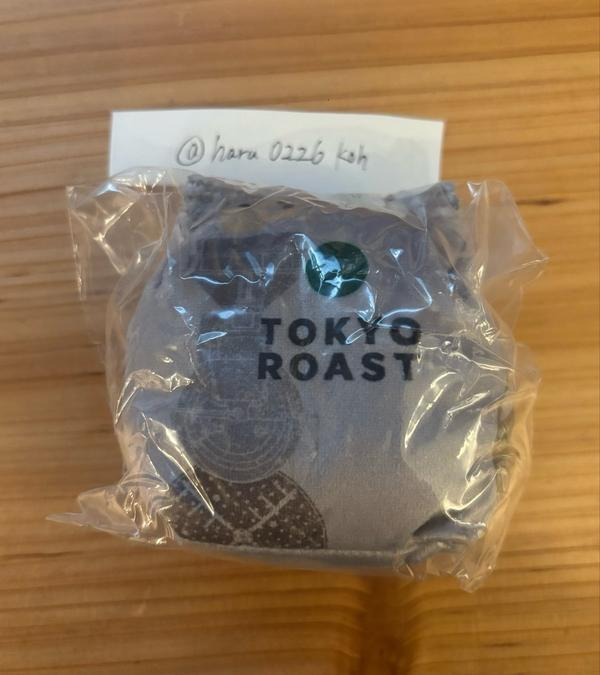
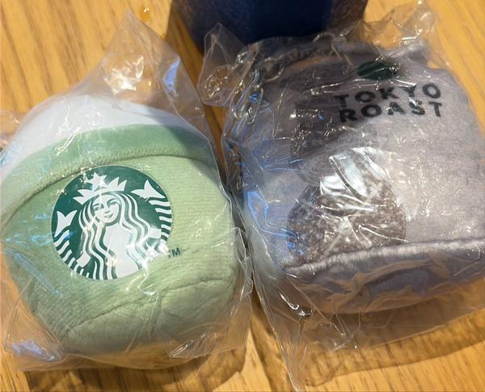
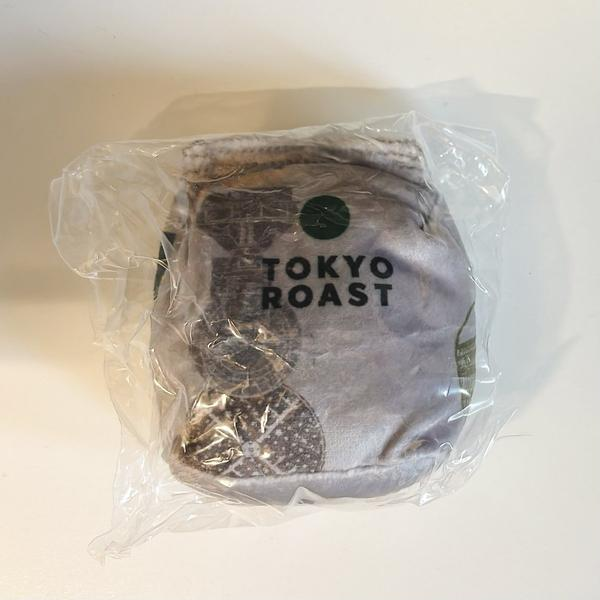
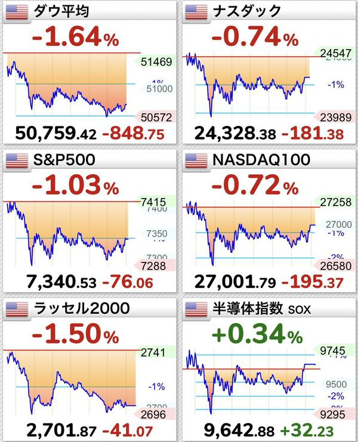

🇯🇵 日本の主要ニュース
元プロ野球投手の江夏豊さん死去、78歳阪神や広島などで活躍し、シーズン401奪三振の日本記録や「江夏の21球」で知られる江夏豊さんが17日までに亡くなりました。名球会が発表しました。
出典：NHK
🌍 世界の主要ニュース
🤖 AIニュース
💻 PC・ガジェットニュース
🔥 Xのトレンド（日本）
ジャンルで絞らず上位20件を掲載。「未確認」はX上の投稿だけを根拠にしたもので、報道機関による裏付けはありません。
マクドナルドの冬の新作「ホリデーマックフルーリー」が18日発売。公式アカウントの投稿にこのタグを付けてリプライするとマックカードが当たるキャンペーンで、参加投稿が殺到しています。
出典：マクドナルド公式X
なにわ男子・大橋和也さんの主演映画『踊れ！アニソンボーイズ』（2027年5月14日公開予定）が発表され、金髪姿のビジュアルにファンが沸いています。
⚠ 未確認（X情報のみ）
ローソンが八天堂とのコラボを告知し、このタグ付き引用投稿でQUOカードPay1万円分が当たるキャンペーンを実施。参加投稿が相次いでいます。
出典：ローソン公式X
11月18日は「雪見だいふくの日」。開けたときの形が「18」に見えることなどにちなみ、朝のあいさつ投稿で話題に。
⚠ 未確認（X情報のみ）
大橋和也さんの主演映画発表を受け、「おめでとう」の投稿が集中。関西弁のヒーロー役で歌・ダンス・バイク・アクションに挑むとされています。
⚠ 未確認（X情報のみ）
水曜日の朝のあいさつの定番フレーズ。前夜の雨が上がった空の写真とともに投稿されています。
⚠ 未確認（X情報のみ）
主演映画の発表で関連タグが複数トレンド入り。ツアー中のポーズが映画の伏線だったのでは、と振り返る投稿も。
⚠ 未確認（X情報のみ）
スターバックスのドリンクやフードを模したぬいぐるみチャームのガチャ「ジョイフルカプセル」が発売。朝から行列ができ、売り切れ店も出ているとの投稿が多数あります。
⚠ 未確認（X情報のみ）

ジョイフルカプセルのラインナップの一つ。「譲・求」を書いた交換募集の投稿で頻繁に名前が挙がっています。
⚠ 未確認（X情報のみ）

同じくスタバのガチャの種類の一つで、交換の「求」に挙がることが多い人気チャームのようです。
⚠ 未確認（X情報のみ）
11月18日は「土木の日」。「土木」を分解すると「十一」「十八」になることと、1879年のこの日に工学会が設立されたことにちなみます。
⚠ 未確認（X情報のみ）
楽天証券の不正アクセス・情報漏えい（最大約1125万口座）を受け、「通知が届いた」「どう対策すべきか」といった投稿が広がっています。
出典：NHK／ITmedia NEWS
「すいようび」を使った水曜朝のあいさつ投稿がトレンド入り。
⚠ 未確認（X情報のみ）
1928年11月18日、短編映画『蒸気船ウィリー』でミッキーマウスがスクリーンデビューしたことから、この日が誕生日とされています。
⚠ 未確認（X情報のみ）
歌い手グループ「いれいす」のメンバー・いふさんの朝のあいさつ「おはいふびゃ！」に、ファンの反応が集まっています。
⚠ 未確認（X情報のみ）
前夜の関東などでの荒天から一転、雨が上がった朝の空や散歩の写真が多く投稿されています。
⚠ 未確認（X情報のみ）

スタバのガチャ「ジョイフルカプセル」の種類の一つ。交換で探している人が多いようです。
⚠ 未確認（X情報のみ）
大橋和也さんが映画で演じる役が「静岡県最大の暴走族総長でアニメを愛する高校3年生」と発表され、ギャップに驚く声が上がっています。
⚠ 未確認（X情報のみ）
スタバのガチャ「ジョイフルカプセル」の種類の一つ。交換募集の投稿で名前が挙がっています。
⚠ 未確認（X情報のみ）

17日引け後に発表されたNVIDIAの決算が市場予想を上回ったことを伝える投稿が、株式投資家の間で広がっています。
出典：BBC（NVIDIA決算）
Grok Bot がまとめました。